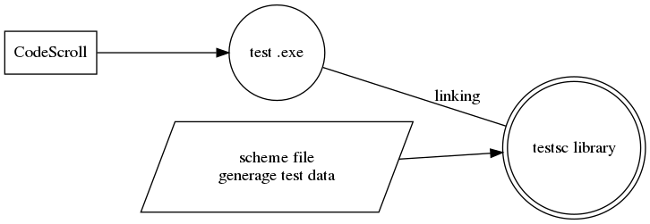
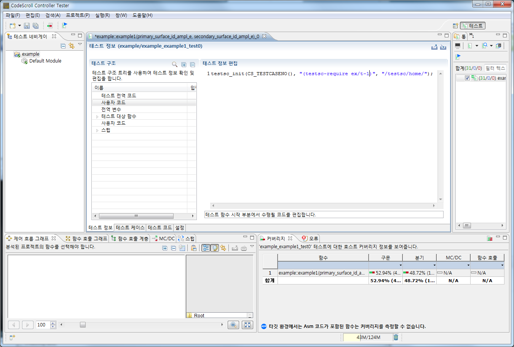

동적 시험 데이터 생성 라이브러리 - testsc
Table of Contents
1 기본 사항
1.1 무엇을 하는 것인가?
동적 시험 시 필요한 테스트 데이터를 파일로 부터 읽어 오는 라이브러리이다. 파일의 형식은 scheme 스트립트로써 간단한 데이터의 정의 뿐만 아니라 프로그래밍을 통한 데이터의 생성이 가능하다. 기본 타입(long, double, char*), 구조체 및 자료구조(List, Tree 등) 데이터를 생성할 수 있다.

1.2 장점
1.2.1 테스트 데이터 조합 가능
테스트 변수의 범위를 이용하여 데이터 조합을 생성할 수 있다. 가령 인자로 3개의 enum 타입을 사용하는 함수의 경우 각 파라미터가 가지는 값들의 범위를 이용하여 존재가능한 모든 파라미터 데이터 조합을 생성할 수 있다.
1.2.2 다수의 테스트케이스 생성
테스트 데이터가 많을 경우 CodeScroll 이 제공하는 UI 를 통하여 데이터를 입력하기가 불편하다. 프로그래밍을 통하여 다수의 데이터도 간편하게 생성이 가능하다.
1.2.3 테스트 데이터 재활용
Codescroll 에서 같은 scheme 파일을 읽도록 설정하면 테스트 데이터를 재활용할 수 있다. 구조가 같은 함수가 다수 있을 때 사용하면 편리하다. 라이브러리 구성이 간단하여 타겟환경 테스트를 수행할 때도 포팅을 하여 사용할 수 있다.
1.3 단점
scheme 언어에 대하여 지식이 있어야 사용 가능하다. scheme 문법 참조
2 사용방법
2.1 testsc 초기화
다음에 나오는 C/Scheme 함수의 상세 내용은 5 을 참조한다.

2.1.2 사용자 코드 작성
유닛테스트 더블클릭 >> 테스트 정보 >> 사용자 코드 테스트스크립트를 로딩하는 부분으로써 다음과 같이 호출한다.
testsc_init(CS_TESTCASENO(), "(testsc-require mb/t-9)", "/testsc/home/");
No description for this link 를 호출하여 testsc 를 초기화 한다. 첫번째 파라미터는 CS_TESTCASENO()으로써 testsc 으로 테스트 번호를 전달한다. 두번째 파라미터는 실행할 scheme 명령이다. 마지막 파라미터는 testsc 홈경로가 된다.

2.1.3 호출전 코드 및 stub 코드 작성
- 호출 전 코드
유닛테스트 더블클릭 >> 테스트 정보 >> 테스트 대상 함수 >> 호출 전 코드
테스트스크립트에서 읽은 값을 codescroll 테스트 변수에 설정한다.
iValue1 = testsc_ivalue("value1") ; dValue2 = testsc_dvalue("value2") ; strValue3 = testsc_strvalue("value3") ; pValue4 = (track_t*)testsc_ext_get(0) ;
- stub 코드 작성
CodeScroll은 stub 의 동작을 제어하기 위한 변수는 생성을 하지 아니한다. scheme 파일에서 stub을 제어할 변수를 설정하고 stub 구현부에서 testsc C API 관련 함수를 이용하여 테스트 변수값을 가져와 사용할 수 있다. 테스트전역 코드에 testsc.h 파일이 포함되어 있기 때문에 별도의 선언 없이 testsc C API 관련 함수를 사용할 수 있다.
2.2 scheme 파일 작성
2.3 CodeScroll 테스트 케이스 빌드 및 커버리지 평가
2.3.1 포함 파일 추가
{kind=link}
2.3.2 링크 라이브러리 추가
/testsc/lib/ 을 링크 디렉토리에 추가하고, libtestsc.a 파일을 링크하도록
한다.
-L/testsc/lib -ltestsc

3 scheme 파일 작성
3.1 테스트 변수 식별
if, switch 등의 분기문에서 사용하는 변수, 구조체 필드, 함수 리턴값 등을 식별한다. CodeScroll은 테스트 케이스를 생성할 때 이 항목들을 대부분 식별한다. 함수의 리턴값등 CodeScroll이 테스트 변수로 식별하지 아니하는 항목도 포함한다.
&&(and) , ||(or) 로 조건이 중첩 되어 있는 경우 로직 연산자의 좌·우 (operand)를 각각 따로 식별 한다.
void check_track(track_data_t* track, int value) { if(is_online() == true ){ //→ is_online() 리턴값 switch(track->link_state){ //→ track->link_state case link_received : if( ( value > 3000 ) && (track->x_position > 10000) ){//→ value , .... //track->x_position } else if( ( value < 700 ) || (track->x_position < 5000 ) ){//→ value , .... //track->x_position } else { .... } break ; case link_transmitted : break ; case not_link_involved : break ; default : break ; } }
3.2 테스트 데이터 확인
테스트 변수의 조건들을 나열한 후 이로 부터 테스트 데이터를 확인한다. 조건으로 평가 되는 경우 true/false 가 되는 값들이며 switch의 경우 case/default의 모든 항목 값 이다. 값의 범위 (>, <) 로 평가하는 경우 구간(최대값, 최소값, 중간값)을 활용하여 테스트 데이터를 생성할 수 있다.
테스트 변수별 조건 나열
is_online 리턴 값 → is_online() == true value → value > 3000 , value < 700 track->x_position → track->x_position > 10000 , track->x_position < 5000 track->link_state → switch(track->link_state)테스트 데이터 생성
is_online 리턴 값 → '(1 0 ) value → '(4000 3000 2000 700 100 ) track->x_position → '(11000 10000 7000 5000 3000) track->link_state → '(link_received link_transmitted not_link_involved)
3.3 테스트 변수 선언
테스트 케이스의 잘 연상이 될 수 있고 짧은 이름으로 선언한다.
(define is-online 1) (define value 7000) (define trk-xpos 300) (define trk-ls link_received)
3.4 테스트 변수에 테스트 데이터를 설정
No description for this link는 테스트 변수별 테스트 데이터 값의 모든 조합(combination)을 생성한다. No description for this link 는 테스트 번호에 맞는 테스트 데이터를 가져와서 lambda 함수를 적용한다. lambda 함수에서 테스트 변수에 값을 설정(No description for this link) 한다.
(testsc-apply-tdata 1 ; 여기 있는 값의 테스트 번호부터 가져오기 시작한다. (lambda (d0 d1 d2 d3) (set! is-online d0) (set! value d1) (set! trk-xpos d2) (set! trk-ls d3)) (combi '(1 0 ) ;is-online tdata '(4000 2000 100 ) ;value tdata '(11000 7000 3000) ;trk-xpos tdata '(link_received link_transmitted not_link_involved) )) ;trk-ls tdata
값을 설정하는 다른 방식들은 예제부분에서 확인한다.
3.5 예제
아래의 예제는 배포파일에 포함되어 있는 CodeScroll 워크스페이스를 열어서 확인할 수 있다.
파일 >> 워크스페이스 바꾸기 메뉴를 이용하여 예제가 있는 워크스페이스로 전환한다.

3.5.1 예제 1 - 파라미터 조합
- 테스트 대상
/testsc/share/srcexample/example1.cpp에 대상 함수가 있다.int example1::get_sec_surf_ampl(const primary_surface_id_ampl_e priampl , const secondary_surface_id_ampl_e secampl ) { switch(priampl){ case pri_surf_ampl_no_statement : return SURPA_NO_STATEMENT ; // 세부정보 없음 case pri_surf_ampl_line : //해군전단 case pri_surf_ampl_combatant : //함정 switch(secampl){ case sec_surf_ampl_no_statement :return SURSA_NO_STATEMENT; case sec_surf_ampl_carrier :return SURSA_CARRIER; // 1 case sec_surf_ampl_destroyer :return SURSA_DESTROYER; // 4 case sec_surf_ampl_cruiser :return SURSA_CRUISER; // 3 case sec_surf_ampl_frigate :return SURSA_FRIGATE; // 5 case sec_surf_ampl_battleship :return SURSA_BATTLESHIP; // 2 default : break ; } // 다음은 실행되지 않습니다. break ; case pri_surf_ampl_patrol_vessel : // 초계함 // 다음은 맵핑되지 않습니다. //enum ESurPatrolSecondaryAmp { // return SURSA_FAST_PATROL // 3 //}; switch(secampl){ case sec_surf_ampl_ASW :return SURSA_ASW_PATROL; // 1 case sec_surf_ampl_ASUW :return SURSA_SURFACE_PATROL; // 2 default : break ; ......
- 함수의 입력 파라미터
함수 입력으로 사용하는 두 enum 타입의 모든 조합을 테스트 변수 로 생성하면 100% 커버리지를 달성할 수 있다.
관련 enum 타입은
/testsc/share/srcexample/example1.h에 정의 되어 있다.primary_surface_id_ampl_e 8개 값, secondary_surface_id_ampl_e 30개 값으로 해서 240개의 조합이 존재한다.
- 함수의 입력 파라미터
- 사용자 코드
테스트 정보 >> 사용자 코드 에서 다음 사항을 확인한다.
No description for this link함수 호출 시 명령으로 testsc 홈 아래 ex/t-1.scm 파일을 호출 하는 부분이다.
testsc_init(CS_TESTCASENO(), "(testsc-require ex/t-1)", "/testsc/home") ; printf("printf\n") ; std::cout<<"cout test"<<std::endl ;
- 호출 전 코드
테스트 정보 >> 테스트 대상 함수 << 호출 전 코드 에서 다음 사항을 확인한다.
CodeScroll 이 생성한 테스트 변수에 testsc 에서 가져온 값을 할당한다.
CodeScroll 의 테스트케이스에 추가적으로 testsc 를 사용하려면 호출전 부분을 CS_TESTCASENO() 가 특정값 이상 일 때만 실행되도록 if 문을 사용할 수 있다.
priampl = (enum primary_surface_id_ampl_e)testsc_ivalue("priampl"); secampl = (enum secondary_surface_id_ampl_e)testsc_ivalue("secampl");
- scheme 파일
- 에디터 실행
- 에디터에서 파일 열기
파일 메뉴에서
/testsc/home/ex/t-1.scm파일 열기를 수행한다.- C 코드에서 사용하는 enum 값이나
#define된 상수값을 정의 하여 사용할 수 있다. 식별자의 실제 값을 찾기 위해 코드를 검색할 필요 없이 테스트케이스를 생성할 수 있다. - No description for this link은 생성한 조합의 값을 첫번째 파라미터 이후의 테스트케이스에 대하여 순서대로 lambda 함수에 전달한다
- 을 통하여 priampl, secampl 각각 0~7, 0~29 의 조합을 생성한다.
- 추가적인 테스트 변수 값이 필요할 경우 scheme의 No description for this link 문을 사용하여 지정할 수 있다.
;;; 상수 정의 - 공통파일을 만들어 테스트간에 공유할 수 있다. (define pri_surf_ampl_amphibious 4 ) (define sec_surf_ampl_frigate 11 ) (define sec_surf_ampl_landing_ship 12 ) ;;; 테스트변수 (define priampl 0) (define secampl 0) (testsc-apply-tdata 1 ; testcase 시작 옵셋 (lambda (a b ) ; testcase 번호에서 시작 옵셋값을 뺀 번째 값을 파라미터로 전달한다. (set! priampl a) ; 조합값의 첫번째 값은 priampl (set! secampl b)) ; 조함값의 두번째 값은 secampl (combi (num-list 0 8) (num-list 0 30))) ;;; combi (num-list 0 8 ) (num-list 0 30 ) ;;; -> ((0 0 ) (0 1 ) (0 2 )... (0 29) (1 0 ) (1 1 ) ...) ;;; ↑ testcase 시작 값과 같은 경우 lambda 함수로 전달 ;;; ↑ testcase 시작 값보다 1 클 경우 lambda 함수로 전달 (case (testsc-get-testnum) ; C 의 switch 문에 해당 - testcase 번호 ((241) ; C 의 case 문에 해당 - testcase 번호가 241 일 경우 (set! secampl -1) ; 테스트변수 secampl 을 -1 로 설정한다. (set! priampl -1)) ; 테스트변수 priampl 을 -1 로 설정한다. ((242 243) ; 테스트번호 나열이 가능하다. (set! priampl pri_surf_ampl_amphibious) ; define 으로 정의된 상수값을 사용할 수 있다. (set! secampl sec_surf_ampl_landing_ship))) ; define 으로 정의된 상수값을 사용할 수 있다.
- C 코드에서 사용하는 enum 값이나
- 테스트데이터 확인
- No description for this link실행해 보기
- scheme 파일 일부분 실행해 보기
No description for this link 함수 호출 끝 부분에 마우스커서를 위치 시킨 후 위쪽 툴바의
()를 실행한다. 이 메뉴는 7.8 를 7.7에서 실행한다. 생성되는 테스트 데이터를 확인할 수 있다.
- No description for this link실행해 보기
- 에디터 실행
- 실행
테스트케이스실행을 하여 커버리지 100% 가 되는 것을 확인 한다.
testsc 홈 아래 testsc-stdout.txt 파일을 열어 보면 다음과 같은 로그를 확인 할 수 있다.
testsc-require /testsc/home/util.scm testsc-require /testsc/home/testsc.scm testsc-require /testsc/home/testsc-ext.scm testsc-require /testsc/home/ex/t-1.scm testsc-apply-tdata next testnum is 241 → t-1.scm 에 있는 testsc-apply-tdata 다음의 테스트번호가 241임을 알려줌 testsc initalize done → testsc_init 함수가 끝나는 시점 printf → 테스트코드(사용자코드) 표준출력 redirection cout test → 테스트코드(사용자코드) 표준출력 redirection testsc_ivalue priampl is 7 → 테스트코드(호출전 코드)에서 testsc_ivalue 의 리턴 값 testsc_ivalue secampl is 1 → 테스트코드(호출전 코드)에서 testsc_ivalue 의 리턴 값
ex/t-1.scm 파일에서 ')'괄호를 하나 추가 하고 실행하면 다음과 같은 에러 로그를 확인할 수 있다.
Error: (/testsc/home//ex/t-1.scm : 44) syntax error: illegal token
여는 괄호'(', 닫는 괄호')' 쌍을 scheme 에서는 s-expression 라고 지칭한다. s-exp 를 처리하는 과정에서 에러가 발생하면 에러가 발생한다. 여는 괄호가 아직 끝나지 아니한 경우는 에러검출이 아니될 수도 있다. 이럴 경우 디버깅 을 통해서 문제가 있는 부분을 확인 할 수 있다. 디버깅 방법은 디버깅 참조
{kind=link}
{kind=link}
{kind=link}
{kind=link}
3.5.2 예제 2 - 수치 연산
3.5.3 예제 3 - 리스트 활용
3.5.4 예제 4 - testsc 구조체
scheme 파일을 통하여 구조체를 정의할 수 있다. 테스트 변수를 사용하여 구조체 필드를 각각 설정하기 어려운 경우 사용한다. 사용되는 구조체의 필드가 다수일 경우, 스텁함수에서 구조체에 대한 포인터를 리턴하는 경우, 사용되는 구조체가 다수인 경우 등이 해당한다.
추가적인 C 구현이 필요하기 때문에 데이터가 필요할 경우 사용한다. 추가적으로 C 함수를 구현해야 하는데, 구조체의 필드별로 테스트변수를 만들어서 설정하는방식과 비교하여 한번 구현해 두면 유리할 경우 추가 구현하여 사용한다.
C 함수 추가 구현이 필요한 부분으로써 관련 구조체가 빈번히 사용될 경우 구현을 하면
C 구현이 필요하기 때문에 내부에서 자주 사용하는 구조체에 대하여 구현을 사고
GFE 로 부터 받는 메시지등을 구현하는데 사용할 수 있다.
테스트 변수를 활용해서 구조체의 필드에 값을 설정할 수 있다. 대부분의 경우
testsc 구조체는 테스트에 사용되는 구조체 생성을 위해 testsc 가 내부적으로 사용하는 구조체를 의미한다.
다음은 식별자 0 으로 _track.TMSIndex 필드 값이 0 _track.identity 가 FRIEND 구조체를 생성한다.
testsc 구조체에 대한 상세한 내용은 testsc 구조체부분 참조
(testsc-ext-set 0
'_track.TMSIndex 10
'_track.identit FRIEND )
- 구조체 테스트 데이터 생성
확장 모듈을 이용하여 구조체 테스트 데이터를 생성할 수 있다. No description for this link 을 이용하여 scheme 파일에서 생성한 구조체를 가져 온다.
- 빌드 방법
build.bat 파일을 이용하여 빌드를 수행한다.
scheme.exe 파일을 생성하기 위해서는 -DSTANDALONE=1 을 컴파일러로 전달해야 한다.
libtestsc.a 파일을 생성하기 위해서는 -DSTANDALONE=0 을 컴파일러로 전달해야 한다.
4 👍 엄지의 법칙
4.1 비관리 코드 활용
테스트케이스생성후 바로 비관리로 전환하며 직접 입력할 수 도 있다.
비관리로 전환을 하였을 경우 테스트케이스 파일을 직접 편집할 수 있다. 비관리 코드로 전환하면 CodeScroll 없이 작업을 할 수 있어 라이센스를 절약할 수 있다.
CodeScroll 테스트케이스 생성 및 일괄 빌드 후 비관리 코드 전환을 수행하고 테스트를 CodeScroll 없이 테스트를 편집할 수 있다. 결과적으로 CodeScroll 라이센스를 절약할 수 있다.
4.1.1 일괄 비관리 코드 전환
CodeScroll 를 종료한 상태에서 프로젝트폴더내의 .csp 파일을 찾은 후 sqlite3 실행 파일을 이용하여 다음과 같이 수행한다.
수행시 해당 .cpp 파일의 모든 함수가 비관리 코드로 전환 된다.
.\sqlite3 c:\codescroll\testsc1\.csdata\testsfile.csp < unmanage.sql
다음은 unmanage.sql 의 내용이다.
update UtTest set isManaged = 0 ;
4.1.2 unittest 내부의 c 파일 편집
비관리 코드 전환이 되었을 때만 직접 편집을 하여야 한다. 안된 상태서 편집하는 경우 관련 사항을 읽어버릴 수 있다.
- USER_CODE_GLOBAL_KEY 부분을 찾아서 관련 헤더파일 include 부분을 직접 편집한다.
- User code start 부분을 찾아서 사용자 코드 작성 부분을 직접 편집한다.
- 테스트 대상 함수 호출 전에 호출전 코드 및 stub 코드 작성 부분을 직접 편집한다.
4.2 CodeScroll 의 테스트데이터와 같이 사용
CS_TESTCASENO() 를 이용하여 관련 부분이 실행이 아니되게 할 수 있다. 다음과 같이 실행하며 10 보다 큰 테스트케이스에 대해서만 scheme 파일로 부터 값을 읽어 온다.
if(CS_TESTCASENO() > 10){ iValue1 = testsc_ivalue("value1") ; dValue2 = testsc_dvalue("value2") ; strValue3 = testsc_strvalue("value3") ; pValue4 = (track_t*)testsc_ext_get(0) ; }
4.3 testsc 확장 모듈
C 를 이용하여 확장 할 수 있다. C 확장을 불필요하게 생성하는 것을 지양하고 최대한 scheme 파일을 활용할 수 있도록 한다. 구조체에 대한 확장 정도만 구현을 하여도 충분하다.
4.3.1 구조체 테스트 데이터 생성
확장 모듈을 이용하여 구조체 테스트 데이터를 생성할 수 있다. No description for this link 을 이용하여 scheme 파일에서 생성한 구조체를 가져 온다.
4.3.3 테스트 데이터를 프로그래밍 할 수 있게 한다.
테스트 데이터에 대한 프로그래밍을 통하여 커버리지를 높일 수 있는 데이터를 생성할 수 있다.
4.4 정의 파일 활용
4.4.1 enum 타입 및 공통 상수 값 정의
4.5 testsc 수정시
정적 라이브러리이기 때문에 테스트케이스재빌드 필요하다.
4.6 표준 출력 redirection
라이브러리가 표준 출력을 파일로 redirection 해준다 코드가 실행하면서 출력하는 사항을 파일로 확인할 수 있다.
4.7 디버깅
값이 예상과 다르거나 스크립트 로딩에 오류가 있는 것 같을 때 수행한다.
4.7.1 테스트 케이스 C 코딩 오류
표준출력 이나 No description for this link를 할용한다. 출력은 testsc 홈 아래 testsc-stdout.txt, testsc-stderr.txt 파일에 저장된다.
4.7.2 scheme 파일 오류
- 커맨드 창을 열고 testsc 홈 폴더(
/testsc/home/) 으로 이동한다. scheme 명령을 실행한다.
C:\testsc\home>.\scheme.exe
No description for this link 을 호출한다.
다음은 testscase 번호를 1로 설정하고 testsc 홈 폴더 아래 ex/t-1.scm 을 로딩한다. 로깅 과정에 에러가 있을 경우 화면으로 출력한다. scheme 파일 의 오류를 검증하는데 사용할 수있다.
ts> (testsc-init 1 ex/t-1 )
테스트 변수 값을 확인한다. 확인하고자 하는 변수를 입력후 엔터를 넣으면 값이 출력된다. No description for this link 함수의 테스트 번호를 변경해가면서 테스트 변수 의 값을 확인할 수 있다.
ts>priampl 0
4.8 testsc 구조체
대부분의 경우 testsc 구조체가 없이도 동적시험 수행이 가능하다.
동적 구조체 생성이 빈번히 발생하는 경우에 사용한다. 구현을 하게 되는 경우 최대한 많는 구조체 타입을 구현하도록 한다. 그렇기 아니할 경우 testsc 라이브러리를 재빌드 하는 일이 자주 발생 할 수 도 있다.
4.9 exception 활용
4.10 editor
5 Reference
5.1 C API -
CodeScroll 테스트 케이스를 C/C++ 로 작성할 때 사용하는 함수 이다.
5.1.1 testsc.h
void testsc_init(int testnum, const char *cmd, const char *homepath = 0 )
- 설명
testsc 를 초기화 한다. testsc 는 파라미터로 전달받은 테스트 번호 및 testsc 홈 경로의 값을 설정한 후 cmd 명령을 실행한다. 명령에서 No description for this link을 이용하여 scheme 파일을 실행할 수 있다.
- 파라미터
- testnum → CS_TESTCASENO()으로써 테스트 번호
- cmd → 실행할 scheme 명령어. 주로 No description for this link 를 호출하여 scheme 파일을 실행한다.
- homepath → testsc 홈 경로. 경로를 파라미터로 넘기지 아니할 경우
프로젝트가 있는 드라이브의
/testsc/home폴더가 홈이 된다. (C 드라이브에 프로젝트 폴더가 있을 경우c:\testsc\home폴더, 리눅스의 경우/testsc/home)
- 리턴 값
void
- 사용 예
testsc_init(CS_TESTCASENO(), "(testsc-require ex/t-1)", "/testsc/home") ;
- 참조
- 설명
#define TESTSC_INIT(cmd) testsc_init(CS_TESTCASENO(), #cmd)
- 설명
No description for this link함수 호출을 간단하게 해주는 매크로 정의.
- 파라미터
- cmd → 실행하고자 하는 scheme 명령. 따옴표 없이 호출
- 리턴 값
없음
- 사용 예
TESTSC_INIT((require ex/t-1)) ;
- 설명
void testsc_eval(const char *cmd)
- 설명
No description for this link 에서 초기화 하면서 scheme 명령을 실행하는 것에 더하여 추가적으로 다른 scheme 명령을 실행고 싶을 때 사용한다. 어떠한 scheme 명령도 실행 가능하지 만 주로 파일을 불러오는 No description for this link 명령을 실행한다.
- 파라미터
- cmd → 실행하고자 하는 scheme 명령어
- 리턴 값
void
- 사용 예
testsc_eval("(testsc-require post)") ; - 참조
- 설명
#define TESTSC_EVAL(cmd) testsc_eval( #cmd)
long testsc_ivalue(const char* name)
- 설명
- 파라미터
- name → 가져오고자 하는 테스트 변수명
- 리턴 값
long 타입의 정수 값
- 사용 예
link_state =(link_state_e)testsc_ivalue("link_state") ;
- 설명
double testsc_dvalue(const char* name)
- 설명
- 파라미터
- name → 가져오고자 하는 테스트 변수명
- 리턴 값
double 타입의 부동소숫점 값
- 사용 예
xpos = testsc_dvalue("xpos") ;
- 설명
char* testsc_strvalue(const char* name)
- 설명
- 파라미터
- name → 가져오고자 하는 테스트 변수명
- 리턴 값
NULL 값으로 종료하는 문자열. 리턴값을 조작하는 경우 에러가 발생할 수 있다.
- 사용 예
char tagname[512] ; strcpy(tagname, testsc_strvalue("tag")) ;
- 설명
void testsc_debug(const char*format ...)
5.2 scheme API -
5.2.2 util.scm
- 변수
- 함수
- (define-macro (testsc-require x) …)
No description for this link 의 파라미터는 불러오고자 하는 scheme 파일이다. (testsc-require mb/t-9) 은 홈 폴더 아래의 mb/t-9.scm 파일을 호출한다. 경로명에 공백이 있어서는 아니되고 파일의 확장자인 .scm 은 생략해야 한다.
경로명은 다음과 같는 명명 규칙을 사용한다. 단순한 convention이며 따르지 아니하여도 상관없음. 기억하기 쉽고 짧을 수록 유리
- 폴더명 : 테스트하고자 하는 .cpp 파일을 나타내는 약어 - t-testname.scm : 테스트케이스(함수별) 를 나타내는 약어. *t-* 으로 시작 하도록 한다.
- (define (t-offset start) …)
(define (t-offset start) (- (testsc-get-testnum) start))
- (define (for-each-index-offset offset proc . args ) …)
- 목적 : 테스트케이스별 값을 설정한다.
사용법 : 테이스케이스별로 순차적으로 값을 설정하고자 할 때 사용한다.
(define testsc 0 ) (define order 0 ) (for-each-index-offset 1 (lambda (x) (set! testsc 1 ) (set! order x) ) system_types-assume_cntrl system_types-control_and_engage system_types-return_to_base system_types-transfer_cntrl system_types-launch_heli system_types-request_cntrl system_types-cancel_handover -1 )
- 입력 파라미터
- offset : 값 설정을 시작할 테스트케이스 번호
- proc : 값 설정을 수행할 함수
- args : 테스트 값
- (define (feio offset proc args ) …)
- 목적 : 테스트케이스별 값을 설정한다.
사용법 : 테이스케이스별로 순차적으로 값을 설정하고자 할 때 사용한다. No description for this link 와 비교하여 args 부분에 리스트가 올 수 있다.
(define i_enStatus 0) (define m_bEnableCallback 0) (define i_pchData_0 0) (define i_pchData_1 0) (feio 1 (lambda (x) (set! i_enStatus (nth 0 x)) (set! m_bEnableCallback (nth 1 x)) (set! i_pchData_0 (nth 2 x)) (set! i_pchData_1 (nth 3 x))) (combi '(11 12) '(1) '(4 5 ) '(1 0 )))
- (define (combi . args)…)
- 목적 : 테스트 데이터 생성(combination)
사용법 :
(combi '(a b ) '(1 2 ))
#+RESULT : '((a 1) (a 2) (b 1) (b 2))
- (define (nth n l) …)
- 목적 : 리스트에서 n 번째 항목을 리턴한다.
사용법 : 리스트에서 값을 가져오고자 할 때 사용한다.
(nth 3 '(zero one two three four))
#+RESULT : three
- 입력 파라미터
- n : 리스트에서 가져오고자 하는 인덱스( 0 부터 시작 )
- l : 리스트
- (define (num-list start end ) …)
- 프로토타입 : (define (num-list start end ) …)
- 목적 : 숫자 리스트를 리턴한다.
사용법 :
(num-list 1 10)
#+RESULT : '(1 2 3 4 5 6 7 8 9 )
- 입력 파라미터
- start : 시작 값(포함)
- end : 종료 값(불포함)
- (define-macro (testsc-init x initcmd) …)
- populate
구현 필요.
- (define-macro (testsc-require x) …)
- testsc.scm
5.3 추가 C excention 구현
C 를 이용하여 추가적인 기능을 구현할 수 있다.
어떻게 구현 하는지 설명 할 수 있다.
5.3.1 구조체 테스트 데이터 생성
6 scheme 문법
6.1 scheme 파일 에디터
6.2 tutorial
6.3 15분 만에 scheme 배우기
;; This gives an introduction to Scheme in 15 minutes ;; ;; First make sure you read this text by Peter Norvig: ;; http://norvig.com/21-days.html ;; ;; Then install GNU Guile ;; NOTE: I won't encourage using Racket but if you really want, ;; I still give you some hints in this tutorial. But the ;; tutorial will base on Guile and RnRs. ;; ;; openSUSE: zypper install guile ;; Debian: apt-get install guile-2.0 (or see your distro instructions) ;; MacOSX: Building Guile 2.0 on the Mac ;; http://irrealblog.blogspot.hk/2011/03/building-guile-2.html ;; Windows try web: http://repl.it/languages/Scheme ;; ;; More general information can be found at: ;; http://www.gnu.org/software/guile ;; Important warning: ;; ;; Going through this tutorial won't damage your computer unless ;; you get so angry that you throw it on the floor. In that case, ;; I hereby decline any responsability. Have fun! ;;;;;;;;;;;;;;;;;;;;;;;;;;;;;;;;;;;;;;;;;;;;;;;;;;;;;;;;;;;;;;;;;;;;;;;; ;; ;; Fire up Scheme: ;; Type 'guile' for GNU Guile ;; Or just use the browser for web version ;; ;; Now look at the prompt: ;;;;;;;;;;;;;;;;;;;;;;;;;;;;;;;;;;;;;;;;;;;;;;;;;;;;;;;;;;;;;;;;;;;;;;;; ;; ;; Semi-colons start comments anywhere on a line. ;; ;; Scheme programs are made of symbolic expressions (s-exps): (+ 2 2) ;; This symbolic expression reads as "Add 2 to 2". ;; Sexps are enclosed into parentheses, possibly nested: (+ 2 (+ 1 1)) ;; A symbolic expression contains atoms or other symbolic ;; expressions. In the above examples, 1 and 2 are atoms, ;; (+ 2 (+ 1 1)) and (+ 1 1) are symbolic expressions. (+ 3 (+ 1 2)) ;; => 6 ;; `set!' stores a value into a variable: ;; Please define my-name first, or you can't assign it. (define my-name "unknown") (set! my-name "NalaGinrut") ;;;;;;;;;;;;;;;;;;;;;;;;;;;;;;;;;;;;;;;;;;;;;;;;;;;; ;; 1. Primitive Datatypes and Operators ;;;;;;;;;;;;;;;;;;;;;;;;;;;;;;;;;;;;;;;;;;;;;;;;;;;; ;;; Numbers 9999999999999999999999 ; integers #b111 ; binary => 7 #o111 ; octal => 73 #x111 ; hexadecimal => 273 3.14 ; reals 6.02e+23 1/2 ; rationals 1+2i ; complex numbers ;; Function application is written (f x y z ...) ;; where f is a function and x, y, z, ... are operands ;; If you want to create a literal list of data, use ' to stop it from ;; being evaluated '(+ 1 2) ; => (+ 1 2) ;; Now, some arithmetic operations (+ 1 1) ; => 2 (- 8 1) ; => 7 (* 10 2) ; => 20 (expt 2 3) ; => 8 (quotient 5 2) ; => 2 (remainder 5 2) ; => 1 (/ 35 5) ; => 7 (/ 1 3) ; => 1/3 (exact->inexact 1/3) ; => 0.3333333333333333 (+ 1+2i 2-3i) ; => 3-1i ;;; Booleans #t ; for true #f ; for false -- any value other than #f is true (not #t) ; => #f (and 0 #f (error "doesn't get here")) ; => #f (or #f 0 (error "doesn't get here")) ; => 0 ;;; Characters ;; According to RnRs, characters only have two notations: ;; #\ and #\x ;; Racket support #\u, but it's never Scheme. #\A ; => #\A #\λ ; => #\λ #\x03BB ; => #\λ ;;; Strings are fixed-length array of characters. "Hello, world!" "Benjamin \"Bugsy\" Siegel" ; backslash is an escaping character "Foo\tbar\x21\a\r\n" ; includes C escapes (only support hex) ;; try to print the above string ;; Printing is pretty easy (display "I'm Guile. Nice to meet you!\n") ;; and unicode escapes "\u004B" ; => K ;; Strings can be added too! (string-append "Hello " "world!") ; => "Hello world!" ;; A string can be treated like a list of characters (string-ref "Apple" 0) ; => #\A ;; format can be used to format strings: (format #t "~a can be ~a" "strings" "formatted") ;; ==> print "strings can be formatted" on screen (define str (format #f "~a can be ~a" "strings" "formatted")) ;; str was assigned to "strings can be formatted" ;;;;;;;;;;;;;;;;;;;;;;;;;;;;;;;;;;;;;;;;;;;;;;;;;;;; ;; 2. Variables ;;;;;;;;;;;;;;;;;;;;;;;;;;;;;;;;;;;;;;;;;;;;;;;;;;;; ;; You can create a variable using define ;; a variable name can use any character except: ()[]{}",'`;#|\ (define some-var 5) some-var ; => 5 ;; Accessing a previously unassigned variable is an exception ; x ; => x: undefined ... ;; Local binding: `me' is bound to "Bob" only within the (let ...) (let ((me "Bob")) "Alice" me) ;; => "Bob" ;;;;;;;;;;;;;;;;;;;;;;;;;;;;;;;;;;;;;;;;;;;;;;;;;;;;; ;; 3. Structs and Collections ;;;;;;;;;;;;;;;;;;;;;;;;;;;;;;;;;;;;;;;;;;;;;;;;;;;;; ;; Record Type (Skip this chapter if you're trying web version (use-modules (srfi srfi-9)) (define-record-type dog (make-dog name breed age) dog? (name dog-name) (breed dog-breed) (age dog-age)) (define my-pet (make-dog "lassie" "collie" 5)) my-pet ; => #<dog> (dog? my-pet) ; => #t (dog-name my-pet) ; => "lassie" ;;; Pairs (immutable) ;; `cons' constructs pairs, `car' and `cdr' extract the first ;; and second elements (cons 1 2) ; => '(1 . 2) (car (cons 1 2)) ; => 1 (cdr (cons 1 2)) ; => 2 ;;; Lists ;; Lists are linked-list data structures, made of `cons' pairs and end ;; with a '() to mark the end of the list (cons 1 (cons 2 (cons 3 '()))) ; => '(1 2 3) ;; `list' is a convenience variadic constructor for lists (list 1 2 3) ; => '(1 2 3) ;; and a quote can also be used for a literal list value '(1 2 3) ; => '(1 2 3) ;; Can still use `cons' to add an item to the beginning of a list (cons 4 '(1 2 3)) ; => '(4 1 2 3) ;; Use `append' to add lists together (append '(1 2) '(3 4)) ; => '(1 2 3 4) ;; Lists are a very basic type, so there is a *lot* of functionality for ;; them, a few examples: ;; For Racket users: (map add1 '(1 2 3)) ; => '(2 3 4) ;; For Guile users: (map 1+ '(1 2 3)) ; => '(2 3 4) ;; add1 or 1+ is not a standard primitive, so it depends on implementations. (map + '(1 2 3) '(10 20 30)) ; => '(11 22 33) ;; filter/count/take/drop are dwell in SRFI-1, so you have to load it first. ;; For Racket users: (require srfi/1) ;; For Guile users: (use-modules (srfi srfi-1)) (filter even? '(1 2 3 4)) ; => '(2 4) (count even? '(1 2 3 4)) ; => 2 (take '(1 2 3 4) 2) ; => '(1 2) (drop '(1 2 3 4) 2) ; => '(3 4) ;;; Vectors ;; Vectors are fixed-length arrays #(1 2 3) ; => '#(1 2 3) ;; Use `vector-append' to add vectors together ;; NOTE: vector-append is in SRFI-43 which is not supported in Guile-2.0.9 ;; or earlier. And it may not be added in Guile-2.0.10. ;; But it's proposed in R7RS, and there's a r7rs branch in Guile upstream. ;; If your Guile doesn't support vector-append, please skip this step. (vector-append #(1 2 3) #(4 5 6)) ; => #(1 2 3 4 5 6) ;;; Hashes ;; Create mutable hash table ;; For GNU Guile (define m (make-hash-table)) (hash-set! m 'a 1) (hash-set! m 'b 2) (hash-set! m 'c 3) ;; Retrieve a value (hash-ref m 'a) ; => 1 ;; Retrieving a non-present value is an exception (hash-ref m 'd) ;; => #f ;; You can provide a default value for missing keys (hash-ref m 'd 0) ;; => 0 ;; Use `hash-remove' to remove keys (functional too) (hash-remove! m 'a) ; => ((b . 2) (c . 3)) ;;;;;;;;;;;;;;;;;;;;;;;;;;;;;;;;;;;;;;;;;;;;;;;;;;;; ;; 3. Functions ;;;;;;;;;;;;;;;;;;;;;;;;;;;;;;;;;;;;;;;;;;;;;;;;;;;; ;; Use `lambda' to create functions. ;; A function always returns the value of its last expression (lambda () "Hello World") ; => #<procedure> ;; Use parens to call all functions, including a lambda expression ((lambda () "Hello World")) ; => "Hello World" ((lambda (x) (+ x x)) 5) ; => 10 ;; Assign a function to a var (define hello-world (lambda () "Hello World")) (hello-world) ; => "Hello World" ;; You can shorten this using the function definition syntatcic sugar: (define (hello-world2) "Hello World") (hello-world2) ; => "Hello World" ;; The () in the above is the list of arguments for the function (define hello (lambda (name) (string-append "Hello " name))) (hello "Steve") ; => "Hello Steve" ;; ... or equivalently, using a sugared definition: (define (hello2 name) (string-append "Hello " name)) ;; You can have multi-variadic functions too, using `case-lambda' (define hello3 (case-lambda (() "Hello World") ((name) (string-append "Hello " name)))) (hello3 "Jake") ; => "Hello Jake" (hello3) ; => "Hello World" ;; ... or specify optional arguments with a default value expression (define* (hello4 #:key (name "World")) (string-append "Hello " name)) ;; Functions can pack extra arguments up in a list (define (count-args . args) (format #t "You passed ~a args: ~a" (length args) args)) (count-args 1 2 3) ; => "You passed 3 args: (1 2 3)" ;; ... or with the unsugared `lambda' form: (define count-args2 (lambda args (format #t "You passed ~a args: ~a" (length args) args))) ;; You can mix regular and packed arguments (define (hello-count name . args) (format #t "Hello ~a, you passed ~a extra args" name (length args))) (hello-count "Finn" 1 2 3) ; => "Hello Finn, you passed 3 extra args" ;; ... unsugared: (define hello-count2 (lambda (name . args) (format #t "Hello ~a, you passed ~a extra args" name (length args)))) ;; And with keywords ;; the keywords are those like this #:its-name, sometimes you may see ;; :its-name without '#' in certain Scheme implementation. ;; NOTE: keywords is not in any Scheme standards like RnRs. ;; But mainstream Scheme implementation often contains it. ;; This truth also means that different implementation may has ;; different result. ;; The code below will follow Guile situation. (define* (hello #:key (name "World") (greeting "Hello") . args) (format #t "~a ~a, ~a extra args~%" greeting name (length args))) ;; 'define*' is similar with 'define', but you may use it for defining ;; optional args or using keyword to specify the value to specified argument. (hello) ; => "Hello World, 0 extra args" (hello 1 2 3) ; => "Hello World, 3 extra args" (hello #:greeting "Hi") ; => "Hi World, 2 extra args" ;; NOTE: In Guile, all the keyword-value pairs are countered as the rest args. ;; It means 'args' here will be (#:greeting "Hi"), so its length is 2. ;; If you are in Racket, it's different, so the result will be 0. ;; Because it's not defined in RnRs, so it's implementation specific. (hello #:name "Finn" #:greeting "Hey") ; => "Hey Finn, 4 extra args" (hello 1 2 3 #:greeting "Hi" #:name "Finn" 4 5 6) ; => "Hi Finn, 10 extra args" ;;;;;;;;;;;;;;;;;;;;;;;;;;;;;;;;;;;;;;;;;;;;;;;;;;;; ;; 4. Equality ;;;;;;;;;;;;;;;;;;;;;;;;;;;;;;;;;;;;;;;;;;;;;;;;;;;; ;; for numbers use `=' (= 3 3.0) ; => #t (= 2 1) ; => #f ;; for characters use `char=?' (char=? #\c #\c) ; => #t ;; for object identity use `eq?' ;; WARNING: don't use `eq?' on numbers and characters, the reason is very simple: ;; because RnRs treat this rule as undefined! ;;(eq? 3 3) ; => Wrong! it's undefined! So it depends on implementation! ;; No matter if you got #t from above, it's a wrong usage!!! ;; Should use (= 3 3) or (eqv? 3 3) (eq? (list 3) (list 3)) ; => #f ;; Why it's #f? Because comparison between objects depends on their head-pointers. ;; These two lists are different objects, and they have different head-pointers. (eq? 'a 'a) ; => #t ;; Symbols are the typical objects to compare with their head-pointers ;; eqv? ;; The difference between `eqv?' and `eq': ;; You can compare numbers and characters with `eqv?' ;; When you use `eqv?' for any objects other than numbers&characters, it's the ;; same with `eq?'. (eqv? 3 3) ; => #t (eqv? #\c #\c) ; => #t (eqv? 'a 'a) ; => #t ;; for collections use `equal?' ;; `equal?' will compare all the values in a collections type like record or list. ;; You can compare any objects with `equal?' safely, but inefficiency. (equal? (list 'a 'b) (list 'a 'b)) ; => #t (equal? (list 'a 'b) (list 'b 'a)) ; => #f ;; Choosing proper equal pred for you code, is one of the art in Scheme programming! (eqv? "abcd" "abcd") ; => unspecified ;; Obviously, strings are collections type, so...it's your EXECISE now! ;; Another EXECISE, what's the proper 'equal-pred' for functions? (what-to-use? (lambda (x) (1+ x)) (lambda (x) (1+ x))) ;;;;;;;;;;;;;;;;;;;;;;;;;;;;;;;;;;;;;;;;;;;;;;;;;;;; ;; 5. Control Flow ;;;;;;;;;;;;;;;;;;;;;;;;;;;;;;;;;;;;;;;;;;;;;;;;;;;; ;;; Conditionals (if #t ; test expression "this is true" ; then expression "this is false") ; else expression ; => "this is true" ;; In conditionals, all non-#f values are treated as true (member 'Groucho '(Harpo Groucho Zeppo)) ; => '(Groucho Zeppo) (if (member 'Groucho '(Harpo Groucho Zeppo)) 'yep 'nope) ; => 'yep ;; `cond' chains a series of tests to select a result (cond ((> 2 2) (error "wrong!")) ((< 2 2) (error "wrong again!")) (else 'ok)) ; => 'ok ;;; Pattern Matching ;; For Racket users: (require racket/match) ; use match module (define (fizzbuzz? n) (match (list (remainder n 3) (remainder n 5)) ((list 0 0) 'fizzbuzz) ((list 0 _) 'fizz) ((list _ 0) 'buzz) (else #f))) ;; For Guile users: (use-modules (ice-9 match)) ; use match module (define (fizzbuzz? n) (match (list (remainder n 3) (remainder n 5)) ((0 0) 'fizzbuzz) ((0 _) 'fizz) ((_ 0) 'buzz) (else #f))) (fizzbuzz? 15) ; => 'fizzbuzz (fizzbuzz? 37) ; => #f ;;; Loops ;; Looping can be done through (tail-) recursion (define (lp i) (when (< i 10) (format #t "i=~a\n" i) (lp (1+ i)))) (lp 5) ; => i=5, i=6, ... ;; Similarly, with a named let (let lp ((i 0)) (when (< i 10) (format #t "i=~a\n" i) (lp (1+ i)))) ; => i=0, i=1, ... ;; how to get a range? just like range(0, 9)? ;; the original 'iota' only accept one para (iota 10) ; ==> (0 1 2 3 4 5 6 7 8 9) ;; the 'iota' in srfi-1 was extended (use-modules (srfi srfi-1)) ;; #<procedure iota (count #:optional start step)> (iota 5 10) ; => (10 11 12 13 14) ;; means from 10 count 5 times, each step +1 (plus one is default) (iota 5 10 2) ; => (10 12 14 16 18) ;; from 10 count 5 times, each step +2 ;; If you need a Python like range(5, 10) ==> (5 6 7 8 9), try: (define (range from to) (map (lambda (x) (+ from x)) (iota (- to from)))) ;; EXECISE: you may find this 'range' implementation is not so good, ;; please optimize it if you can. (range 5 10) ; => (5 6 7 8 9) ;; how to do iteration? (for-each display '(1 2 3 4 5)) ;; => 12345 (for-each (lambda (i) (format #t "i=~a\n" i)) (iota 10)) ; => i=0, i=1, ... (for-each (lambda (i) (format #t "i=~a\n" i)) (range 5 10)) ; => i=5, i=6, ... ;;; Iteration Over Other Sequences ;; `for' allows iteration over many other kinds of sequences: ;; lists, vectors, strings, sets, hash tables, etc... (for-each display '(l i s t)) ;; => list (define vector-for-each (@ (rnrs) vector-for-each)) ;; export vector-for-each from rnrs only (vector-for-each display #(v e c t o r)) ;; => vector (string-for-each display "string") ;; => string ;;; More Iterations (do ((i 10 (1+ i)) (j '(x y z) (cdr j))) ((null? j)) ; if j is '(), just end the loop (format #t "~a:~a " i (car j))) ; => 0:x 1:y 2:z ;;; Exceptions ;; To catch exceptions, use the 'catch' form (catch 'my-error (lambda () (throw 'my-error)) (lambda e (display "oh~my error!\n"))) ; => oh~my error! ;;;;;;;;;;;;;;;;;;;;;;;;;;;;;;;;;;;;;;;;;;;;;;;;;;;; ;; 6. Mutation ;;;;;;;;;;;;;;;;;;;;;;;;;;;;;;;;;;;;;;;;;;;;;;;;;;;; ;; Use `set!' to assign a new value to an existing variable (define n 5) (set! n (1+ n)) n ; => 6 ;; Use fluid for explicitly mutable values (define n* (make-fluid 5)) (fluid-set! n* (1+ (fluid-ref n*))) (fluid-ref n*) ; => 6 ;; Many Guile datatypes are immutable (pairs, lists, etc), some come in ;; both mutable and immutable flavors (strings, vectors, hash tables, ;; etc...) ;; Use `vector' or `make-vector' to create mutable vectors (define vec (vector 2 2 3 4)) (define wall (make-vector 100 'bottle-of-beer)) ;; Use vector-set! to update a slot (vector-set! vec 0 1) (vector-set! wall 99 'down) vec ; => #(1 2 3 4) ;; Create an empty mutable hash table and manipulate it (define m3 (make-hash-table)) (hash-set! m3 'a 1) (hash-set! m3 'b 2) (hash-set! m3 'c 3) (hash-ref m3 'a) ; => 1 (hash-ref m3 'd 0) ; => 0 (hash-remove! m3 'a) ;;;;;;;;;;;;;;;;;;;;;;;;;;;;;;;;;;;;;;;;;;;;;;;;;;;; ;; 7. Modules ;;;;;;;;;;;;;;;;;;;;;;;;;;;;;;;;;;;;;;;;;;;;;;;;;;;; ;; Modules let you organize code into multiple files and reusable ;; libraries; Make sure put all the module code in one file, since ;; the modules split as files. And the module name should be same ;; with the filename, say, module named (my-cake) is 'my-cake.scm', ;; and module named (mods my-cake) is 'mods/my-cake.scm', ;; (mods submods my-cake) ==> 'mods/submods/my-cake.scm'. ;; ---begin my-cake.scm--- (define-module (my-cake) ; define a `cake' module based on racket/base #:use-module (ice-9 format) ; the pre-requisition of current module #:export (print-cake)) ; function exported by the module (define (show fmt n ch) ; internal function (format #t fmt (make-string n ch)) (newline)) (define (print-cake n) (show " ~a " n #\.) (show " .-~a-. " n #\|) (show " | ~a | " n #\space) (show "---~a---" n #\-)) ;; --end my-cake.scm--- ;; Be sure that the path of 'my-cake.scm' is in your current ;; %load-path list. Use `use-modules' to get all `provide'd names ;; from a module. (use-modules (my-cake)) ; the ' is for a local submodule (print-cake 3) ; (show "~a" 1 #\A) ; => error, `show' was not exported ;;;;;;;;;;;;;;;;;;;;;;;;;;;;;;;;;;;;;;;;;;;;;;;;;;;; ;; 8. Classes and Objects ;;;;;;;;;;;;;;;;;;;;;;;;;;;;;;;;;;;;;;;;;;;;;;;;;;;; ;; TODO ;;;;;;;;;;;;;;;;;;;;;;;;;;;;;;;;;;;;;;;;;;;;;;;;;;;; ;; 9. Macros ;;;;;;;;;;;;;;;;;;;;;;;;;;;;;;;;;;;;;;;;;;;;;;;;;;;; ;; Macros let you extend the syntax of the language ;; Let's add a while loop (define-syntax-rule (while condition body ...) (let loop () (when condition body ... (loop)))) (let ((i 0)) (while (< i 10) (display i) (set! i (1+ i)))) ;; Macros are hygienic, you cannot clobber existing variables! (define-syntax-rule (swap! x y) ; -! is idomatic for mutation (let ((tmp x)) (set! x y) (set! y tmp))) (define tmp 1) (define a 2) (define b 3) (swap! a b) (format #t "tmp = ~a; a = ~a; b = ~a\n" tmp a b) ; tmp is unaffected ;; But they are still code transformations, for example: (define-syntax-rule (bad-while condition body ...) (when condition body ... (bad-while condition body ...))) ;; this macro is broken: it generates infinite code, if you try to use ;; it, the compiler will get in an infinite loop (quit) ;; exit repl
7 용어
7.2 scheme 파일
scheme언어로 작성되어 있는 파일이다. 테스트 케이스에서 No description for this link이나 No description for this link이 파일을 실행한다. No description for this link 에서 설정한 테스트 번호에 해당하는 테스트 데이터를 테스트 변수에 설정한다.
7.5 테스트 데이터
테스트 변수의 값을 의미한다.